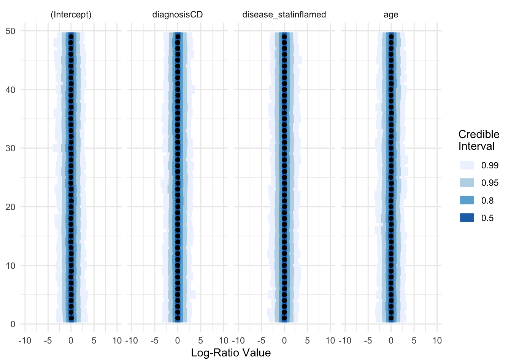
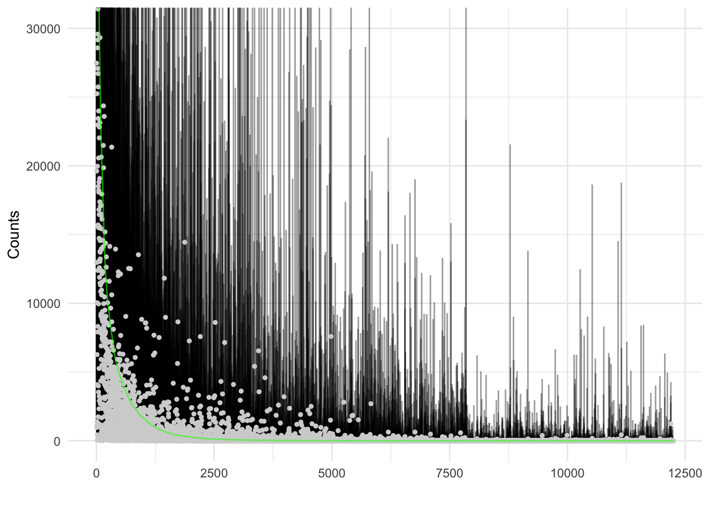
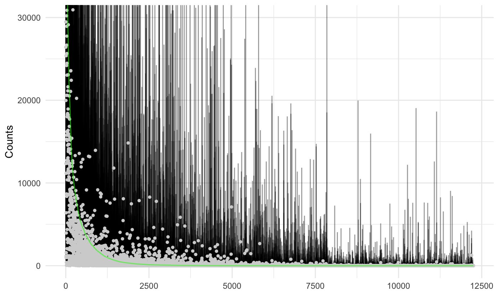
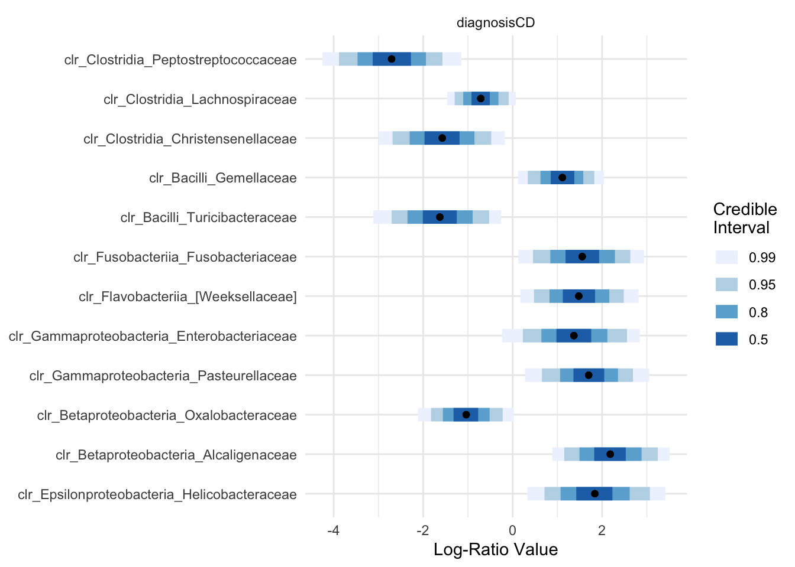

Introduction to Stray::Pibble
Justin Silverman
2019-06-22
introduction-to-stray.RmdAn introduction to stray
stray (Silverman et al. 2019) is a loose acronym for “(Bayesian) Multinomial Logistic-Normal Models”. In particular the development of stray stems from the need for fast inference for time-invariant MALLARD models(Silverman et al. 2018). stray is very fast! It uses closed form solutions for model gradients and Hessians written in C++ to preform MAP estimation in combination with parameter uncertainty estimation using a Laplace Approximation. One of the main models in stray is the function pibble which fits a Multinomial Logistic-Normal Linear Regerssion model.
So what is a stray model exactly? First let me give the broad description from 10,000ft up: Basically its a model for multinomial count data (e.g., each sample contains the counts of \(D\) “types of things”). Importantly, unlike the more common Poisson count models, the multinomial models a “competition to be counted” (i.e., cases in which counting more of one type of thing means that I have less resources available to count other types of things).
This may seem vague so let me give an example. Pretend there is a ball pit with red, green, and blue balls. Pretend that the ball pit is very large and I don’t know the total number of balls in the ball pit, yet I want to say something about the relative number of red, blue, and green balls in the pit. One way I may choose to measure the ball pit is by grabbing an armful of balls and counting the number of balls of each color (e.g., in one armful I may collect 5 red, 3 blue, and 6 green). My arms can only contain so many balls (in this example about 14) and so if I were to have (randomly) gotten another green ball in my armful (making 7 total) I would likely not have been able to measure one of the red or blue balls; hence the “competition to be counted”. It turns out that this type of sampling occurs all the time in many situations (Wikipedia has an example with political polling). Perhaps one of the most notable examples of this type of count data occurs with modern high-throughput sequencing studies such as 16S rRNA studies to profile microbial communities or bulk/single-cell RNA-seq studies to study expression profiles of cells. In all cases, transcripts are sequenced and the number of different types of transcripts are counted. The important part is that sequencing only samples a small portion of the total genetic material available and leads to similar competition to be counted.
The pibble model
Pibble is one type of stray model. In particular its a stray model for multivariate linear regression.
Let \(Y\) denote an \(D\times N\) matrix of counts. Let us denote the \(j\)-th column of \(Y\) as \(Y_j\). Thus each “sample” in the dataset is a measurement of the relative amount of \(D\) “types of things”. Suppose we also have have covariate information in the form of a \(Q\times N\) matrix \(X\).
The following is the pibble model including likelihood and priors: \[ \begin{align} Y_j & \sim \text{Multinomial}\left(\pi_j \right) \\ \pi_j & = \phi^{-1}(\eta_j) \\ \eta_j &\sim N(\Lambda X_j, \Sigma) \\ \Lambda &\sim MN_{(D-1) \times Q}(\Theta, \Sigma, \Gamma) \\ \Sigma &\sim W^{-1}(\Xi, \upsilon) \end{align} \] Here \(MN_{(D-1) \times Q}\) denotes a Matrix Normal distribution for a matrix \(\Lambda\) of regression coefficients of dimension \((D-1)\times Q\). Essentially you can think of the Matrix normal as having two covariance matrices one describing the covariation between the rows of \(\Lambda\) (\(\Sigma\)) and another describing the covariation of the columns of \(\Lambda\) (\(\Gamma\)). and \(W^{-1}\) refers to the Inverse Wishart distribution (which is a common distribution over covariance matrices). The line \(\pi_j = \phi^{-1}(\eta_j)\) represents a transformation between the parameters \(\pi_j\) which exist on a simplex (e.g., \(\pi_j\) must sum to 1) and the transformed parameters \(\eta_j\) that exist in real space. In particular we define \(\phi^{-1}\) to be the inverse additive log ratio transform (which conversely implies that \(\eta_j = ALR(\pi_j)\)) also known as the identified softmax transform (as it is more commonly known in the Machine Learning community). While I will say more on this later in this tutorial, one thing to know is that I have the model implemented using the ALR transform as it is computationally simple and fast; the results of the model can be viewed as if any number of transforms had been used (instead of the ALR) including the isometric log-ratio transform, or the centered log-ratio transform.
Before moving on, I would like to give a more intuitive description of pibble. Essentially the main modeling component of pibble is the third equation above (\(\eta_j \sim N(\Lambda X_j, \Sigma)\)) which is just a multivariate linear model. That is, \(X\) are your covariates (which can be continuous, discrete, binary, etc…), and \(\Sigma\) is the covariance matrix for the regression residuals.
Example analysis of microbiome data
This analysis is the same as that presented in the stray manuscript (Silverman et al. 2019). I will reanalyze a previously published study comparing microbial composition in the terminal ileum of subjects with Crohn’s Disease (CD) to healthy controls (Gevers et al. 2014). To do this I will fit a pibble model using CD status, inflammation status and age as covariates (plus a constant intercept term).
library(MicrobeDS)
library(phyloseq)
library(dplyr)
library(stray)
set.seed(899)
data("RISK_CCFA")
# drop low abundant taxa and samples
dat <- RISK_CCFA %>%
subset_samples(disease_stat!="missing",
immunosup!="missing") %>%
subset_samples(diagnosis %in% c("no", "CD")) %>%
subset_samples(steroids=="false") %>%
subset_samples(antibiotics=="false") %>%
subset_samples(biologics=="false") %>%
subset_samples(biopsy_location=="Terminal ileum") %>%
tax_glom("Family") %>%
prune_samples(sample_sums(.) >= 5000,.) %>%
filter_taxa(function(x) sum(x > 3) > 0.10*length(x), TRUE)Create Design Matrix and OTU Table
sample_dat <- as.data.frame(as(sample_data(dat),"matrix")) %>%
mutate(age = as.numeric(as.character(age)),
diagnosis = relevel(diagnosis, ref="no"),
disease_stat = relevel(disease_stat, ref="non-inflamed"))
X <- t(model.matrix(~diagnosis + disease_stat+age, data=sample_dat))
Y <- otu_table(dat)
# Investigate X and Y look like
X[,1:5]
#> 1 2 3 4 5
#> (Intercept) 1.00000 1.00000 1.00 1.00000 1.00
#> diagnosisCD 1.00000 1.00000 1.00 1.00000 1.00
#> disease_statinflamed 0.00000 1.00000 1.00 1.00000 1.00
#> age 15.16667 14.33333 15.75 13.58333 15.75
Y[1:5,1:5]
#> OTU Table: [5 taxa and 5 samples]
#> taxa are rows
#> 1939.SKBTI.0175 1939.SKBTI047 1939.SKBTI051 1939.SKBTI063
#> 4442127 0 9 0 14
#> 74305 1 2 35 1
#> 663573 36 1 0 2
#> 2685602 10 264 211 276
#> 4339819 0 37 42 70
#> 1939.SKBTI072
#> 4442127 2
#> 74305 0
#> 663573 1
#> 2685602 83
#> 4339819 22Next specify priors. We are going to start by specifying a prior on the covariance between log-ratios \(\Sigma\). I like to do this by thinking about a prior on the covariance between taxa on the log-scale (i.e., between the log of their absolute abundances not the log-ratios). I will refer to this covariance on log-absolute abundances \(\Omega\). For example, here I will build a prior that states that the mean of \(\Omega\) is the identity matrix \(I_D\). From From Aitchison (1986), we know that if we assume that the taxa have a covariance \(\Omega\) in terms of log-absolute abundance then their correlation in the \(\text{ALR}_D\) is given by \[ \Sigma = G \Omega G^T \] where \(G\) is a \(D-1 \times D\) matrix given by \(G = [I_{D-1}; -1_{D-1}]\) (i.e., \(G\) is the \(\text{ALR}_D\) contrast matrix). Additionally, we know that the Inverse Wishart mode is given by \(\frac{\Xi}{\upsilon + D}\). Finally, note that \(\upsilon\) essentially controls our uncertainty in \(\Sigma\) about this prior mean. Here I will take \(\upsilon = D+3\). This then gives us \(\Xi = (\upsilon - D) GIG^T\). We scale \(\Xi\) by a factor of 1/2 to make \(Tr(\Xi)=D-1\).
upsilon <- ntaxa(dat)+3
Omega <- diag(ntaxa(dat))
G <- cbind(diag(ntaxa(dat)-1), -1)
Xi <- (upsilon-ntaxa(dat))*G%*%Omega%*%t(G)Finally I specify my priors for \(\Theta\) (mean of \(\Lambda\)) and \(\Gamma\) (covariance between columns of \(\Lambda\); i.e., covariance between the covariates). I will center my prior for \(\Lambda\) about zero, and assume that the covariates are independent.
I strongly recommend users perform prior predictive checks to make sure their priors make sense to them. stray makes this easy, all the main fitting functions (e.g., pibble) will automatically sample from the prior predictive distribution if Y is left as NULL (e.g., without data your posterior is just your prior).
priors <- pibble(NULL, X, upsilon, Theta, Gamma, Xi)
print(priors)
#> pibblefit Object (Priors Only):
#> Number of Samples: 250
#> Number of Categories: 49
#> Number of Covariates: 4
#> Number of Posterior Samples: 2000
#> Contains Samples of Parameters:Eta Lambda Sigma
#> Coordinate System: alr, reference category: 49The main fitting functions in the stray package output special fit objects (e.g., pibble outputs an object of class pibblefit). These fit objects are just lists with some extra metadata that allows special method dispatch. For example, if you call print on a pibblefit object you will get a nice summary of what is in the object.
Note: Currently, the function pibble takes expects inputs and outputs in the “default” coordinate system; this is simply the ALR coordinate system where the last category (49 above) is taken as reference (this will be generalized in future versions). More specifically for a vector \(x\) representing the proportions of categories \(\{1, \dots, D\}\) we can write \[x^* = \left( \log \frac{x_1}{x_D}, \dots, \log \frac{x_{D-1}}{x_D}\right).\] As mentioned above however, I have designed stray to work with many different coordinate systems including the ALR (with respect to any category), CLR, ILR, or proportions. To help transform things between these coordinate systems I have written a series of transformation functions that transform any pibblefit object into a desired coordinate system. Importantly, pibblefit objects keep track of what coordinate system they are currently in so as a user you only need to specify the coordinate system that you want to change into. Keep in mind that covariance matrices cannot be represented in proportions and so visualizations or summaries based on covariance matrices will be suppressed when pibblefit objects are in the proportions coordinate system. As an example, lets look at viewing a summary of the prior for \(\Lambda\) with respect to the CLR coordinate system1.
priors <- to_clr(priors)
summary(priors, pars="Lambda")
#> $Lambda
#> # A tibble: 196 x 9
#> Parameter coord covariate p2.5 p25 p50 mean p75 p97.5
#> <chr> <int> <int> <dbl> <dbl> <dbl> <dbl> <dbl> <dbl>
#> 1 Lambda 1 1 -1.74 -0.528 0.0421 0.0509 0.596 2.09
#> 2 Lambda 1 2 -2.08 -0.567 0.0143 0.00199 0.575 1.96
#> 3 Lambda 1 3 -2.06 -0.620 -0.0102 -0.0373 0.532 1.98
#> 4 Lambda 1 4 -1.90 -0.554 -0.00469 -0.00205 0.549 2.01
#> 5 Lambda 2 1 -1.86 -0.564 -0.0249 0.00991 0.535 2.13
#> 6 Lambda 2 2 -1.89 -0.572 -0.00610 -0.00000782 0.580 2.02
#> 7 Lambda 2 3 -2.14 -0.570 -0.0388 -0.0247 0.518 1.93
#> 8 Lambda 2 4 -2.00 -0.536 0.0240 0.0165 0.589 1.95
#> 9 Lambda 3 1 -2.02 -0.584 0.0224 0.0138 0.620 2.04
#> 10 Lambda 3 2 -2.05 -0.542 -0.00311 -0.00502 0.581 1.86
#> # … with 186 more rowsBy default the summary function returns a list (with possible elements Lambda, Sigma, and Eta) summarizing each posterior parameter based on quantiles and mean (e.g., p2.5 is the 0.025 percentile of the posterior distribution). As this type of table may be hard to take in due to how large it is, pibblefit objects also come with a default plotting option for each of the parameters. Also the returned plot objects are ggplot objects so normal ggplot2 commands work on them. Before doing that though we are going to use one of the names functions for pibblefit objects to provide some more specific names for the covariates (helpful when we then plot).
names_covariates(priors) <- rownames(X)
plot(priors, par="Lambda") + ggplot2::xlim(c(-10, 10)) 
This looks fairly reasonable to me. So I am going to go ahead and fit the model with data. stray provides a helper method called refit that we will use to avoid passing prior parameters again.
priors$Y <- Y # remember pibblefit objects are just lists
posterior <- refit(priors, optim_method="adam")Unlike the main pibble function, the refit method can be called on objects in any coordinate system and all transformations to and from the default coordinate system are handled internally2. This is one nice thing about using the refit method. That said, new objects added to the pibblefit object need to be added in the proper coordinates For example, if we wanted to replace our prior for \(\Xi\) for an object in CLR coordinates, we would had to transform our prior for Xi to CLR coordinates before adding it to the priors object.
Now I are also going to add in the taxa names to make it easier to interpret the results.
tax <- tax_table(dat)[,c("Class", "Family")]
tax <- apply(tax, 1, paste, collapse="_")
names_categories(posterior) <- taxBefore doing anything else lets look at the posterior predictive distribution to assess model fit. This can be accessed through the method ppc3.
ppc(posterior) + ggplot2::coord_cartesian(ylim=c(0, 30000))
There are a few things to note about this plot. First, when zoomed out like this it looks it is hard to make much of it. This is a fairly large dataset we are analyzing and its hard to view an uncertainty interval; in this case its plotting the median and 95% confidence interval in grey and black and the observed counts in green. stray also has a simpler function that summarizes the posterior predictive check.
ppc_summary(posterior)
#> Proportions of Observations within 95% Credible Interval: 0.9902857Here we see that the model appears to be fitting well (at least based on the posterior predictive check) and that only about 1.5% of observations fall outside of the 95% posterior predictive density (this is good).
Some readers will look at the above ppc plots and think “looks like over-fitting”. However, note that there are two ways of using ppc. One is to predict the counts based on the samples of \(\eta\) (Eta; as we did above); the other is to predict “from scratch” that is to predict starting form the posterior samples of \(\Lambda\) (Lambda) then sampling \(\eta\) and only then sampling \(Y\). This later functionality can be accessed by also passing the parameters from_scratch=TRUE to the ppc function. Note: these two posterior predictive checks have different meanings, one is not better than the other.
ppc(posterior, from_scratch=TRUE) +ggplot2::coord_cartesian(ylim=c(0, 30000))
ppc_summary(posterior, from_scratch=TRUE)
#> Proportions of Observations within 95% Credible Interval: 0.972Now we are going to finally look at the posterior distribution of our regression parameters, but because there are so many we will focus on just those that have a 95% credible interval not including zero (i.e., those that the model is fairly certain are non-zero). We are also going to ignore the intercept term and just look at parameters associated with age and disease status.
posterior_summary <- summary(posterior, pars="Lambda")$Lambda
focus <- posterior_summary[sign(posterior_summary$p2.5) == sign(posterior_summary$p97.5),]
focus <- unique(focus$coord)
plot(posterior, par="Lambda", focus.coord = focus, focus.cov = rownames(X)[2:4])
The first, and most obvious ting to notice is that the covariate age has pretty much no effect at all, whatever effect it may have is incredibly weak. So we are going to remove age from the plot and just look at those coordinates with non-zero effect for diagnosis CD
posterior_summary <- filter(posterior_summary, covariate=="diagnosisCD")
focus <- posterior_summary[sign(posterior_summary$p2.5) == sign(posterior_summary$p97.5),]
focus <- unique(focus$coord)
tax_table(dat)[taxa_names(dat)[which(names_coords(posterior) %in% focus)]]
#> Taxonomy Table: [13 taxa by 7 taxonomic ranks]:
#> Kingdom Phylum Class
#> 74305 "Bacteria" "Proteobacteria" "Epsilonproteobacteria"
#> 4449236 "Bacteria" "Proteobacteria" "Betaproteobacteria"
#> 1105919 "Bacteria" "Proteobacteria" "Betaproteobacteria"
#> 4477696 "Bacteria" "Proteobacteria" "Gammaproteobacteria"
#> 4448331 "Bacteria" "Proteobacteria" "Gammaproteobacteria"
#> 4154872 "Bacteria" "Bacteroidetes" "Flavobacteriia"
#> 4452538 "Bacteria" "Fusobacteria" "Fusobacteriia"
#> 341322 "Bacteria" "Firmicutes" "Bacilli"
#> 1015143 "Bacteria" "Firmicutes" "Bacilli"
#> 176318 "Bacteria" "Firmicutes" "Clostridia"
#> 1788466 "Bacteria" "Firmicutes" "Clostridia"
#> 1896700 "Bacteria" "Firmicutes" "Clostridia"
#> 191718 "Bacteria" "Firmicutes" "Erysipelotrichi"
#> Order Family Genus Species
#> 74305 "Campylobacterales" "Helicobacteraceae" NA NA
#> 4449236 "Burkholderiales" "Alcaligenaceae" NA NA
#> 1105919 "Burkholderiales" "Oxalobacteraceae" NA NA
#> 4477696 "Pasteurellales" "Pasteurellaceae" NA NA
#> 4448331 "Enterobacteriales" "Enterobacteriaceae" NA NA
#> 4154872 "Flavobacteriales" "[Weeksellaceae]" NA NA
#> 4452538 "Fusobacteriales" "Fusobacteriaceae" NA NA
#> 341322 "Turicibacterales" "Turicibacteraceae" NA NA
#> 1015143 "Gemellales" "Gemellaceae" NA NA
#> 176318 "Clostridiales" "Christensenellaceae" NA NA
#> 1788466 "Clostridiales" "Lachnospiraceae" NA NA
#> 1896700 "Clostridiales" "Peptostreptococcaceae" NA NA
#> 191718 "Erysipelotrichales" "Erysipelotrichaceae" NA NA
plot(posterior, par="Lambda", focus.coord = focus, focus.cov = rownames(X)[2])
More Technical Details
A few notes on model inference and parameter collapsing
Along with some algorithmic speed-ups enabled by the C++ Eigen library stray uses conjugate priors for the regression component of the model allowing the last three lines of the model to be collapsed into 1 line. After this the last three lines of the model can be re-expanded using fully conjugate sampling schemes that do not require optimization or MCMC (only matrix operations).
Here are the details: The collapsed model is given by \[ \begin{align} Y_j & \sim \text{Multinomial}\left(\pi_j, n_j\right) \\ \pi_j & = \phi^{-1}(\eta_j) \\ \eta_j &\sim T_{(D-1)\times N}(\upsilon, \Theta X, \Xi, I_N + X^T \Gamma X) \end{align} \] where \(A=(I_N + X^T \Gamma, X)^{-1}\) and \(T_{(D-1)\times N}\) refers to the Matrix T-distribution the \((D-1)\times N\) matrix \(\eta\) with log density given by \[\log T_{(D-1)\times N}(\eta | \upsilon, \Theta X, \Xi, A) \propto -\frac{\upsilon+N-D-2}{2}\log | I_{D-1}+\Xi^{-1}(\eta-\Theta X)A(\eta-\Theta X)^T |.\] Rather than using MCMC to sample \(\eta\) stray uses MAP estimation (using a custom C++ Eigen based implementation of the ADAM optimizer and closed form solutions for gradient and hessian of the collapsed model)4. Additionally, stray allows quantification of uncertainty in MAP estimates using a Laplace approximation. We found that in practice this MAP based Laplace approximation produced comparable results to a full MCMC sampler but with tremendous improvements in compute time.
Once samples of \(\eta\) are produced using the Laplace approximation closed form solutions for the conditional density of \(\Lambda\) and \(\Sigma\) given \(\eta\) are used to “uncollapse” the collapsed model and produce posterior samples from the target model. This uncollapsing is fast and given by the following matrix equations:
\[ \begin{align} \upsilon_N &= \upsilon+N \\ \Gamma_N &= (XX^T+\Gamma^{-1})^{-1} \\ \Theta_N &= (\eta X^T+\Theta\Gamma^{-1})\Gamma_N \\ \Xi_N &= \Xi + (\eta - \Theta_N X)(\eta - \Theta_N X)^T + (\Theta_N - \Theta)\Gamma(\Theta_N- \Theta)^T \\ p(\Sigma | \eta, X) &= W^{-1}(\Xi_N, \upsilon_N)\\ p(\Lambda | \Sigma, \eta, X) &= MN_{(D-1)\times Q}(\Lambda_N, \Sigma, \Gamma_N). \end{align} \] If Laplace approximation is too slow, unstable (see below) or simply not needed, the default behavior of pibble is to preform the above matrix calculations and produce a single point estimate of \(\Sigma\) and \(\Lambda\) based on the posterior means of \(p(\Sigma | \eta, X)\) and \((\Lambda | \Sigma, \eta, X)\).
References
Aitchison, J. 1986. The Statistical Analysis of Compositional Data. Book. Monographs on Statistics and Applied Probability. London ; New York: Chapman; Hall.
Gevers, Dirk, Subra Kugathasan, Lee A Denson, Yoshiki Vázquez-Baeza, Will Van Treuren, Boyu Ren, Emma Schwager, et al. 2014. “The Treatment-Naive Microbiome in New-Onset Crohn’s Disease.” Cell Host & Microbe 15 (3). Elsevier: 382–92.
Silverman, Justin D, Heather Durand, Rachael J Bloom, Sayan Mukherjee, and Lawrence A David. 2018. “Dynamic Linear Models Guide Design and Analysis of Microbiota Studies Within Artificial Human Guts.” bioRxiv. Cold Spring Harbor Laboratory. doi:10.1101/306597.
Silverman, Justin D., Kimberly Roche, Zachary C. Holmes, Lawrence A. David, and Sayan Mukherjee. 2019. “Bayesian Multinomial Logistic Normal Models through Marginally Latent Matrix-T Processes.” arXiv E-Prints, March, arXiv:1903.11695.
These are very large objects with many posterior samples, so it can take a little time to compute. Faster implementations of summary may be included as a future update if need arises↩
That said, due to the need to transform back and forth from the default coordinate system, it is fastest to call refit on
pibblefitobjects in the default coordinate system bypassing these transforms.↩This can also be used to plot samples of the prior predictive distribution if Y is null in the object as in our
priorsobject↩Which we found preformed substantially better than L-BFGS, which we also tried.↩